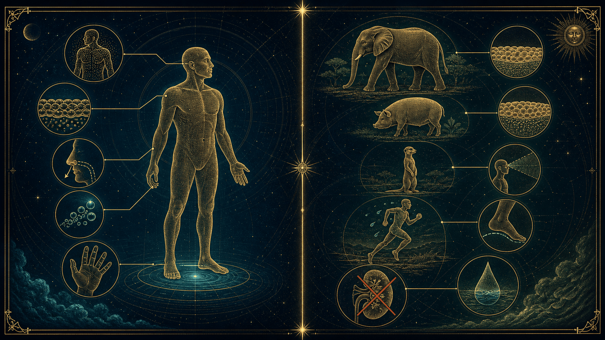
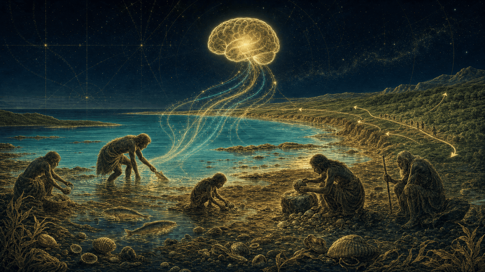

Génie évolutif ou délire de biologiste en vacances ? On plonge en apnée dans la théorie la plus controversée (et la plus humide) de l'anthropologie — pour démêler le mythe, sa réfutation point par point, et la part de vérité qui surnage : le régime côtier.
Et si le « chaînon manquant » portait un bonnet de bain ?
Ce dossier reprend le live mot pour mot. On y présente l'hypothèse honnêtement, on la démonte avec les meilleurs arguments scientifiques, puis on garde ce qui résiste : nos ancêtres n'étaient pas des dauphins, mais peut-être des opportunistes des rivages.
Sir Alister Hardy lance l'« Aquatic Ape Hypothesis » dans New Scientist.
des paléoanthropologues rejettent la version « singe marin ».
Pinnacle Point : des humains mangeaient déjà des coquillages.
Objectifs pédagogiques
Apprendre à distinguer une belle histoire d'une preuve.
Comprendre
Ce que dit vraiment l'hypothèse du singe aquatique — et pourquoi elle séduit autant.
Réfuter
Démonter chaque « indice » (poils, graisse, mains palmées, sel) avec un argument solide et sourcé.
Nuancer
Garder la part crédible : le rôle des ressources côtières et des Oméga-3 dans l'essor du cerveau.
Le script du live
Préparez vos tubas.
01
Au micro
Salut à tous ! Aujourd'hui, on va parler de l'évolution. Mais oubliez la savane, les herbes hautes et la course à pied. Et si je vous disais que votre ancêtre le plus stylé ne ressemblait pas à un chasseur de lions, mais plutôt à un touriste en short qui refuse de sortir de l'eau ? On plonge en apnée dans la théorie du Singe Aquatique : préparez vos tubas, on va voir si l'humanité est née dans la mer ou si on boit juste la tasse collectivement.
Est-ce que vous vous êtes déjà demandé pourquoi on adore autant traîner dans notre bain jusqu'à ressembler à des pruneaux séchés ? Pourquoi on a de la graisse sous la peau comme les phoques, mais aucun poil pour nous tenir chaud ? Ce soir, on explore la théorie qui prétend que l'homme est devenu debout... pour ne pas avoir de l'eau dans le nez. Bienvenue dans le live « Singe Aquatique » : entre science-fiction et aquagym préhistorique.
Oubliez tout ce qu'on vous a appris à l'école. Et si le « chaînon manquant » portait en fait un bonnet de bain ? Ce soir, on s'attaque à la théorie la plus controversée (et la plus humide) de l'anthropologie. Pourquoi sommes-nous les seuls primates à savoir retenir notre respiration et à aimer le surf ? On va décortiquer le mythe du Singe Aquatique. Alors, génie évolutif ou simple délire de biologiste en vacances ?
Les punchlines de l'intro
« On nous dit qu'on vient du singe, moi je dis qu'on vient du dauphin qui a raté son virage. »
« La bipédie, c'est juste le résultat d'un ancêtre qui voulait garder son sandwich au sec en traversant la rivière. »
« Darwin a trouvé l'origine des espèces, nous on cherche l'origine du slip de bain. »
L'Hypothèse de l'Appel de l'Eau
De quoi parle-t-on, au juste ?
02
Hypothèse de l'Appel de l'Eau (ou l'Hypothèse du Singe Aquatique). Pour faire simple, c'est l'idée que nos ancêtres auraient passé une période de leur évolution dans un environnement semi-aquatique (rivages, marécages), ce qui expliquerait pourquoi nous sommes si différents des autres primates.
Voici les points clés pour comprendre le concept :
1. Les arguments des partisans (Pourquoi on y croit ?)
Les défenseurs de cette théorie, comme l'écrivaine Elaine Morgan, s'appuient sur plusieurs caractéristiques humaines uniques :
La bipédie : Marcher sur deux jambes est plus facile dans l'eau (pour garder la tête hors de l'eau).
La perte des poils : Comme les dauphins ou les hippopotames, nous sommes « nus », ce qui réduit la traînée dans l'eau.
La couche de graisse : Nous avons de la graisse sous-cutanée (le « gras » du corps), contrairement aux autres singes qui stockent leur graisse différemment.
Le contrôle de la respiration : Nous pouvons retenir notre souffle volontairement, une capacité essentielle pour plonger, mais rare chez les mammifères terrestres.
2. Le point de vue de la science officielle
Il faut être honnête : la majorité des paléoanthropologues rejettent cette théorie. Pourquoi ?
Manque de preuves fossiles : On n'a jamais trouvé de fossiles d'hominidés présentant des adaptations spécifiquement marines.
Explications alternatives : La perte de poils et la bipédie s'expliquent très bien par l'adaptation à la chaleur de la savane (thermorégulation).
Le danger : Les rivages d'Afrique à l'époque étaient remplis de crocodiles et de prédateurs, ce qui rend l'habitat aquatique peu probable pour un petit primate.
3. Où en est-on aujourd'hui ?
Même si l'idée d'un « singe marin » est jugée trop radicale, une version plus douce gagne du terrain : l'hypothèse des ressources côtières.
Elle suggère que nos ancêtres n'étaient pas des « dauphins », mais qu'ils vivaient près de l'eau et mangeaient beaucoup de poissons et de coquillages. Les acides gras (Oméga-3) trouvés dans la nourriture aquatique auraient d'ailleurs pu aider notre cerveau à grossir.
C'est un excellent exemple de théorie « alternative » qui oblige les scientifiques à se poser de meilleures questions sur nos origines.
La réfutation
Cinq arguments qui font couler la théorie.
03
Pour contredire efficacement la théorie du « Singe Aquatique », la science s'appuie sur plusieurs arguments solides. Voici les points principaux que tu peux utiliser :
1. L'absence totale de preuves fossiles
C'est l'argument le plus fort. On a découvert des milliers de fossiles de nos ancêtres (comme Lucy).
Le contre-argument : Aucun de ces fossiles ne présente de caractéristiques purement aquatiques (comme des membres palmés ou des structures osseuses typiques des mammifères marins). Tous les fossiles trouvés montrent des adaptations à la vie terrestre ou arboricole (dans les arbres).
2. La « Théorie de la Savane » (des explications plus simples)
La science préfère souvent l'explication la plus simple. Les traits cités par les partisans du singe aquatique s'expliquent très bien par la vie en milieu chaud et sec :
La bipédie : Elle permet de voir plus loin au-dessus des hautes herbes et de réduire la surface du corps exposée directement au soleil brûlant.
La perte de poils : Elle est essentielle pour permettre à la transpiration de s'évaporer et de refroidir notre corps pendant la course, ce qu'un animal à fourrure ne peut pas faire aussi bien.
3. Le problème de la graisse de « phoque »
Les partisans disent que notre graisse sous-cutanée sert d'isolant thermique, comme chez les baleines.
Le contre-argument : Notre graisse est répartie différemment. Elle sert surtout de réserve d'énergie pour alimenter notre cerveau, qui est extrêmement gourmand en calories. De plus, les humains meurent d'hypothermie très rapidement dans l'eau froide, contrairement aux vrais mammifères marins.
4. Le danger des eaux africaines
Il y a des millions d'années, les points d'eau en Afrique (lacs, rivières, côtes) étaient des endroits extrêmement dangereux.
Le contre-argument : S'installer dans l'eau aurait exposé nos ancêtres à des prédateurs redoutables comme les crocodiles géants ou les hippopotames. Il est biologiquement peu probable qu'un petit primate sans défense ait choisi cet habitat pour survivre.
5. La comparaison avec les autres mammifères « nus »
Le contre-argument : Il existe des mammifères terrestres sans poils qui ne sont pas aquatiques, comme le rat-taupe nu ou l'éléphant. La perte de poils n'est donc pas une preuve automatique d'un passé aquatique.
En résumé
Pour la majorité des scientifiques, cette théorie est considérée comme une « pseudo-science » car elle interprète des faits de manière isolée sans tenir compte de l'ensemble des preuves archéologiques et environnementales dont nous disposons.
Le faux indice n°1
Les « mains palmées » : de l'embryologie, pas de l'évolution.
04
C'est un argument classique des partisans de cette théorie, mais il est scientifiquement très facile à démonter. Voici ce que tu peux répondre pour clouer le bec à ton interlocuteur :
1. Ce n'est pas une adaptation, c'est de l'embryologie
L'argument des « mains palmées » repose sur une confusion entre l'évolution et le développement du fœtus.
La réponse
« Tous les mammifères (souris, chiens, humains) ont les mains palmées au début de leur développement dans l'utérus. C'est l'état de base de l'embryon. Chez l'humain, les cellules entre les doigts meurent naturellement avant la naissance (c'est ce qu'on appelle l'apoptose). S'il nous reste parfois une petite peau, c'est juste un "bug" génétique mineur (la syndactylie), pas un reste d'ancêtre marin. »
2. Compare avec les vrais animaux aquatiques
Si nous avions été semi-aquatiques pendant des millions d'années, nos mains seraient bien différentes.
La réponse
« Regarde les loutres ou les castors : ils ont de vraies membranes charnues et solides. La petite peau que nous avons entre les doigts est beaucoup trop fine et fragile pour pousser de l'eau efficacement. Si on avait évolué pour nager, nos doigts seraient devenus plus courts et la membrane plus rigide, comme des palettes. »
3. Nos mains sont faites pour la précision, pas pour la nage
L'évolution de la main humaine est allée exactement à l'opposé d'une palme.
La réponse
« La caractéristique principale de la main humaine, c'est le pouce opposable et la sensibilité du bout des doigts. C'est fait pour manipuler des outils, tailler des pierres et tenir des objets avec précision. Une main "palmée" serait un immense handicap pour fabriquer les outils qui ont permis à nos ancêtres de survivre. »
4. L'argument « et les pieds alors ? »
Si l'humain était fait pour l'eau, ses pieds seraient les premiers à être palmés pour la propulsion.
La réponse
« Pourquoi nos mains seraient-elles "un peu" palmées alors que nos pieds sont devenus totalement rigides et cambrés pour la marche et la course d'endurance sur terre ferme ? C'est contradictoire. »
En résumé, on peut lui dire
« Ce que tu appelles des "palmes" n'est qu'un vestige du développement embryonnaire commun à tous les mammifères terrestres. Si on suit ta logique, les hamsters et les cochons sont aussi des animaux aquatiques car leurs embryons ont les mêmes pattes palmées au début ! »
Le niveau au-dessus
Les arguments académiques.
05
Pour contredire cette théorie avec des arguments académiques, tu peux t'appuyer sur des travaux de paléoanthropologues reconnus. Voici les sources et les arguments précis :
1. La source de référence : John H. Langdon
Le chercheur John H. Langdon a publié une critique majeure dans le Journal of Human Evolution (1997) intitulée « Umbrella hypotheses and parsimony in human evolution ».
L'argument : Il explique que cette théorie est une « hypothèse parapluie » qui tente d'expliquer trop de choses avec une seule cause.
La réplique : Selon le principe du « Rasoir d'Ockham », l'explication la plus simple est souvent la meilleure. Les traits humains (perte de poils, bipédie) s'expliquent très bien par des adaptations séparées à la savane (thermorégulation) plutôt que par un passage mystérieux par l'eau pour lequel nous n'avons aucun fossile.
2. Le « Cherry Picking » (Sélection partiale des données)
La science critique souvent la méthode d'Elaine Morgan (la figure de proue de cette théorie).
La source : De nombreux anthropologues comme Alice Roberts soulignent que la théorie ignore les incohérences.
La réplique : Les partisans citent les mains palmées ou la graisse, mais ignorent que nous sommes très mauvais pour filtrer le sel (nos reins ne sont pas adaptés à l'eau de mer, contrairement aux mammifères marins) et que nous avons besoin de boire énormément d'eau douce, ce qui est illogique pour une espèce « marine ».
3. L'argument de la sudation (Transpiration)
La source : Les études sur la thermorégulation humaine (par exemple, celles de Nina Jablonski sur l'évolution de la peau humaine).
La réplique : « Si nous étions aquatiques, pourquoi aurions-nous développé le système de transpiration le plus efficace du règne animal ? Transpirer dans l'eau est inutile. La perte de poils combinée à des millions de glandes sudoripares est la preuve ultime que nous avons évolué pour courir de longues distances sous un soleil de plomb (chasse à l'épuisement), pas pour nager. »
4. La chronologie des fossiles
La source : Le consensus sur les sites de fouilles (Afar en Éthiopie, etc.).
La réplique : « Les fossiles d'Hominines (comme Australopithecus ou Homo erectus) ont été trouvés dans des contextes de savanes boisées ou de plaines. Si nous avions vécu une période aquatique de plusieurs millions d'années, la probabilité de n'avoir trouvé aucun fossile dans des sédiments marins spécifiques est proche de zéro. »
En résumé
« La science privilégie les preuves directes (fossiles et génétique) sur les analogies de surface. Comme le dit le paléontologue Ian Tattersall, il est séduisant de voir des coïncidences, mais sans preuves géologiques, le singe aquatique reste un mythe romantique, pas une réalité biologique. »
La convergence évolutive
Nus, gras et debout… sans jamais voir la mer.
06
Voici une liste d'exemples concrets que tu peux utiliser pour démontrer que les traits dits « aquatiques » de l'humain existent chez des animaux 100 % terrestres. Cela prouve que l'évolution peut choisir ces options pour des raisons qui n'ont rien à voir avec l'eau.

Les mêmes traits, expliqués sans la moindre goutte d'océan
1. La peau nue (Perte de poils)
L'argument classique du singe aquatique est : « On n'a plus de poils comme les dauphins ».
Le contre-exemple terrestre : L'Éléphant, le Rhinocéros et le Cochon.
Pourquoi ? Ces animaux ont perdu leurs poils pour évacuer la chaleur plus facilement (thermorégulation) dans des environnements chauds.
Ta réponse
« Si perdre ses poils fait de nous des créatures aquatiques, alors l'éléphant est un poisson ! La peau nue est une adaptation thermique pour les grands mammifères actifs sous le soleil. »
2. La couche de graisse sous-cutanée
L'argument : « On a du gras sous la peau comme les phoques ».
Le contre-exemple terrestre : Le Cochon domestique.
Pourquoi ? Le cochon possède une couche de graisse sous-cutanée très similaire à la nôtre, pourtant il n'est pas fait pour vivre dans l'océan.
Ta réponse
« Le gras sous-cutané chez l'humain sert de réserve d'énergie pour notre cerveau et de protection métabolique. Le cochon en a aussi, et personne ne prétend qu'il descend d'un ancêtre sirène. »
3. La bipédie (Marcher sur deux pattes)
L'argument : « On se tient debout pour garder la tête hors de l'eau ».
Le contre-exemple terrestre : Le Suricate ou le Gerenuk (gazelle-girafe).
Pourquoi ? Le suricate se tient debout pour surveiller les prédateurs dans la savane. Le gerenuk se tient sur ses pattes arrière pour atteindre les feuilles hautes des arbres.
Ta réponse
« Se tenir debout est une stratégie de surveillance et de recherche de nourriture au sol ou en hauteur. Pas besoin d'être dans une piscine pour que la bipédie soit avantageuse. »
4. Le contrôle de la respiration
L'argument : « On peut retenir notre souffle, donc on est faits pour plonger ».
Le contre-exemple terrestre : Les Oiseaux chanteurs et les chiens.
Pourquoi ? Pour produire des sons complexes (le langage pour nous, le chant pour les oiseaux), il faut un contrôle musculaire précis du diaphragme et de l'expiration.
Ta réponse
« Notre capacité à retenir notre souffle est liée à l'évolution du langage articulé, pas à la plongée sous-marine. C'est ce contrôle du souffle qui nous permet de parler, tout simplement. »
5. Les larmes et la sueur salée
L'argument : « On évacue le sel par les larmes comme les oiseaux de mer ».
La réalité scientifique : Nos larmes et notre sueur sont très peu salées comparées aux sécrétions des animaux marins.
Ta réponse
« Les animaux marins ont des glandes à sel ultra-puissantes pour survivre à l'ingestion d'eau de mer. Nos reins à nous sont incapables de traiter l'eau salée. Si on boit de l'eau de mer, on meurt de déshydratation en quelques heures. C'est la preuve qu'on n'est pas du tout adaptés à l'océan. »
La leçon
« L'évolution utilise souvent les mêmes solutions pour des problèmes différents (c'est la convergence évolutive). On peut être nu, gras et debout parce qu'on vit dans une savane chaude, sans jamais avoir mis un pied dans l'océan. »
À garder sous le coude
Fiche de Riposte : l'Hypothèse du Singe Aquatique.
07
1. Le « Nez et les mains » (Les faux indices)
L'adversaire dit
« On a les mains palmées et le nez vers le bas pour l'eau. »
Ta réponse
Les « palmes » sont un stade embryonnaire commun à tous les mammifères terrestres (chiens, rats). Le nez vers le bas est une adaptation pour humidifier l'air sec de la savane et protéger les voies respiratoires de la poussière, pas de la plongée.
2. La « Peau nue » (Le thermostat)
L'adversaire dit
« On n'a pas de poils, comme les dauphins. »
Ta réponse
On a perdu nos poils pour transpirer. Nous sommes les champions du monde de la sudation. Or, on ne transpire pas dans l'eau (ça ne sert à rien). La peau nue sert à courir des heures sous le soleil sans surchauffer le cerveau.
3. La « Couche de graisse » (L'énergie)
L'adversaire dit
« On est gras sous la peau pour s'isoler du froid marin. »
Ta réponse
Notre graisse est un stock d'énergie vital pour notre cerveau, qui consomme 20 % de nos calories. Le cochon a la même graisse et il est 100 % terrestre. De plus, un humain nu meurt d'hypothermie en 30 minutes dans une eau à 15 °C. Un vrai mammifère marin, non.
4. La « Bipédie » (La surveillance)
L'adversaire dit
« On marche debout pour garder la tête hors de l'eau. »
Ta réponse
On marche debout pour libérer nos mains (outils) et voir au-dessus des hautes herbes de la savane. Les fossiles montrent que nos pieds ont évolué pour la course d'endurance, ce qui est l'opposé total d'une adaptation à la nage.
5. L'épreuve du Sel (La preuve ultime)
L'argument massue
« Si on était aquatiques, on aurait des glandes à sel ou des reins capables de filtrer l'eau de mer. On est les seuls "primates marins" supposés qui meurent s'ils boivent de l'eau salée. C'est biologiquement impossible. »
La citation pour conclure
« L'évolution n'est pas une devinette basée sur des ressemblances. Sans fossiles marins, le singe aquatique reste une belle histoire, mais une mauvaise science. »
La psychologie du mythe
Pourquoi une théorie fausse reste populaire.
08
Comprendre pourquoi une théorie « fausse » reste populaire aide à mieux débattre. Voici les trois raisons principales :
1. Elle est facile à comprendre (Le « Bon Sens »)
La science officielle est souvent complexe (génétique, biomécanique, datation radiométrique). La théorie du singe aquatique, elle, repose sur des observations que tout le monde peut faire : « on aime nager », « on n'a pas de poils », « les bébés flottent ».
Le piège : On confond une ressemblance avec une preuve. C'est ce qu'on appelle une théorie intuitive, mais en science, l'intuition est souvent trompeuse.
2. Le récit de « l'outsider » contre « l'élite »
Elaine Morgan, qui a popularisé cette idée, n'était pas une scientifique mais une scénariste. Elle a présenté son combat comme celui d'une femme seule face à un « establishment » scientifique masculin et fermé d'esprit.
Pourquoi ça marche : Les gens adorent l'idée qu'un amateur puisse avoir raison contre tous les experts. Cela donne un côté « rebelle » à ceux qui soutiennent la théorie.
3. Elle comble les « trous » de l'évolution
L'évolution humaine a des zones d'ombre (on n'a pas de fossiles pour chaque millier d'années). La théorie du singe aquatique propose une solution « tout-en-un » : une seule cause (l'eau) pour expliquer dix traits différents (nez, graisse, poils, marche, etc.).
La réalité : L'évolution est un bricolage lent et chaotique. Chaque trait est apparu à des moments différents pour des raisons différentes.
À retenir
« C'est une théorie séduisante mais spéculative. Elle est populaire parce qu'elle raconte une belle histoire, mais en science, une belle histoire ne remplace pas l'absence de preuves physiques. On a des milliers de fossiles dans la savane, et zéro dans les récifs coralliens. »
Le « bras scientifique » français
Yvette Deloison & le débat des experts.
09
Yvette Deloison (souvent orthographiée Loisson par erreur) est une chercheuse au CNRS, et son cas est particulier car, contrairement à Elaine Morgan qui était une écrivaine, Deloison est une véritable scientifique (paléoanthropologue).
Cela donne beaucoup de poids à ses arguments quand on discute avec quelqu'un, mais voici comment tu peux nuancer ses thèses :
1. Sa théorie : Le « Proto-Pline »
Yvette Deloison ne dit pas exactement que nous étions des « dauphins ». Elle soutient une théorie appelée l'origine semi-aquatique de la bipédie.
Son argument : Elle pense que notre ancêtre commun avec les grands singes n'était pas un animal grimpant aux arbres, mais un être qui marchait déjà debout dans l'eau (en milieu marécageux) pour cueillir de la nourriture.
Sa preuve favorite : La structure du pied humain, qu'elle juge incompatible avec une origine arboricole (de singe qui grimpe).
2. Comment la contredire (avec respect) ?
Même si elle est respectée pour ses travaux techniques sur l'anatomie du pied, sa conclusion « aquatique » est très contestée. Voici tes angles de réponse :
Le manque de consensus : « Yvette Deloison est une spécialiste reconnue du pied, mais sa conclusion sur l'origine aquatique est très minoritaire au sein du CNRS et de la communauté scientifique mondiale. Elle est quasiment la seule experte à interpréter ces données anatomiques de cette façon. »
L'évolution « mosaïque » : Les fossiles comme Ardipithecus ramidus montrent que la bipédie a commencé à apparaître chez des primates qui vivaient encore dans des forêts denses, pas forcément dans des marais. L'évolution s'est faite par étapes (mosaïque) et non par un passage brutal dans l'eau.
Le pied n'est pas « primitif » : Elle affirme que notre pied est très ancien et n'a pas beaucoup évolué. La majorité des chercheurs prouvent au contraire que le pied humain est une structure ultra-spécialisée pour la marche terrestre, avec une cambrure (arche plantaire) qui ne sert à rien pour nager ou marcher dans la vase, mais qui est indispensable pour absorber les chocs lors de la course sur sol dur.
3. La confusion fréquente
Si ton interlocuteur te parle d'elle, il essaie d'utiliser son autorité scientifique pour valider la théorie.
Ta réponse
« C'est vrai, Yvette Deloison est une chercheuse sérieuse, mais en science, une hypothèse doit être confirmée par d'autres experts et par des preuves fossiles. Pour l'instant, aucun fossile de l'époque qu'elle décrit (il y a 15 millions d'années) ne confirme un habitat semi-aquatique. »
En résumé
Yvette Deloison est le « bras scientifique » de la théorie en France, mais ses travaux sur le pied n'annulent pas les preuves massives (génétique, sueur, besoins en eau douce) qui nous lient à la savane et à la forêt. En science, une idée n'est pas vraie parce qu'une personne la dit, mais parce que la communauté arrive à la reproduire.
Les experts qui s'opposent à sa vision
Voici les noms et les arguments des experts qui s'opposent à sa vision :
A. Pascal Picq (Collège de France)
C'est sans doute le plus célèbre paléoanthropologue français. Il est très critique envers les théories « aquatiques ».
Son argument : Il explique que la bipédie n'est pas née dans l'eau, mais qu'elle est une adaptation polyvalente. Pour lui, nos ancêtres étaient des « grimpeurs-marcheurs ».
La réplique : « Comme le souligne Pascal Picq, les fossiles comme Ardipithecus ou Orrorin montrent que la bipédie s'est développée dans des environnements de forêt mosaïque (mélange d'arbres et de savane), pas dans des marécages. L'anatomie de ces fossiles prouve qu'ils grimpaient encore très bien aux arbres. »
B. Marc Azéma et Laurent Brasier
Dans leurs ouvrages sur l'évolution, ils rappellent que l'interprétation d'Yvette Deloison sur le pied « primitif » est contestée.
L'argument : Le pied humain n'est pas « resté simple » comme elle le dit. C'est une structure extrêmement modifiée : le gros orteil s'est aligné, la plante s'est voûtée pour faire ressort.
La réplique : « Des chercheurs comme Marc Azéma rappellent que notre pied est une pièce d'ingénierie unique au monde pour la marche sur sol ferme. Si nous étions restés dans l'eau, nous n'aurions jamais développé cette voûte plantaire qui sert d'amortisseur pour la course terrestre. »
3. Le consensus international (William Jungers)
William Jungers est l'un des plus grands experts mondiaux de la biomécanique des primates (Stony Brook University).
L'argument : Ses études sur la densité osseuse et la forme des articulations montrent que les premiers hominidés étaient soumis à des forces de compression typiques de la marche au sol, et non à la poussée d'Archimède (l'eau).
La réplique : « Les analyses biomécaniques de William Jungers sur les fossiles montrent que la structure des os de nos ancêtres répondait à la gravité terrestre. Dans l'eau, le squelette ne se densifie pas de la même manière car le corps est porté par l'eau. »
Comment conclure le débat sur Yvette Deloison
« Yvette Deloison fait un travail d'anatomie fascinant, mais elle est très isolée. La majorité des chercheurs (Picq, Jungers, Lovejoy) considèrent que ses conclusions sont des interprétations personnelles qui ne collent pas avec les découvertes de terrain. En science, quand 99 % des experts et 100 % des fossiles disent "Savane/Forêt", une hypothèse sur les "Marais" reste une curiosité théorique, pas une vérité établie. »
La méthode anti-intox
D'où vient l'information ?
10
Quand on te parle du « Singe Aquatique » ou des thèses d'Yvette Deloison, regardez bien d'où viennent les informations. C'est le meilleur moyen de clore le débat en montrant que tu maîtrises le sujet.
1. Le test de la « Revue par les pairs »
En science, une découverte n'existe que si elle est publiée dans une revue où d'autres experts l'ont vérifiée (comme Nature, Science ou le Journal of Human Evolution).
Le signal d'alarme : Si ton interlocuteur te cite un blog, un documentaire YouTube type « documentaire choc » ou un livre grand public sans références, c'est de la spéculation.
Ta réponse : « C'est une idée intéressante pour un scénario de film, mais a-t-elle été validée par un comité de lecture scientifique récent ? Pour l'instant, les grandes revues rejettent cette hypothèse faute de preuves. »
2. Attention au « Mille-feuille argumentatif »
Les défenseurs de cette théorie utilisent souvent cette technique : ils balancent 50 petits indices (le nez, les larmes, la graisse, les poils, le hoquet, etc.). Même si chaque indice est faux ou bancal, l'accumulation donne l'impression que « ça fait beaucoup de coïncidences ».
Ta technique de défense : Ne te laisse pas noyer. Prends un seul point (comme les reins incapables de filtrer le sel) et reste dessus. Si l'humain ne peut pas boire d'eau de mer, toute la théorie s'effondre, peu importe la forme de son nez.
3. Les sites à privilégier pour tes sources
Si tu veux des arguments en béton armé, cherche sur ces plateformes :
Hominidés.com : Un site français très complet qui fait le point sur chaque théorie avec l'avis des experts.
Le CNRS (Le journal) : Pour avoir les vrais articles de recherche, même ceux d'Yvette Deloison (vous verras qu'ils sont souvent très prudents et moins catégoriques que ce que les gens racontent sur le web).
La chaîne de vulgarisation spécialisée : Des chaînes comme Passé Sauvage ou Confessions d'Histoire traitent parfois ces sujets avec beaucoup de rigueur.
La règle d'or
« La science n'est pas une question d'opinion, mais de preuves. Tant qu'on n'aura pas trouvé un squelette d'ancêtre avec des débuts de nageoires ou des sédiments marins dans ses poumons, le singe aquatique restera une hypothèse romantique, mais sans fondement. »
Les punchlines pour clore le débat
« C'est une théorie super séduisante mais elle est rejetée par 99 % des paléoanthropologues. Pourquoi ? Parce qu'on a des milliers de fossiles dans la savane et aucun dans l'eau. Nos traits "aquatiques" (peau nue, graisse) servent en fait à réguler notre température pour courir sous le soleil. On est des champions de la transpiration, ce qui ne sert à rien dans l'eau ! »
La synthèse factuelle
« L'hypothèse du Singe Aquatique (ou thèses d'Y. Deloison) est ce qu'on appelle une "hypothèse parapluie" : elle tente d'expliquer trop de choses avec une seule cause. Voici les faits :
Biologie : Nos reins sont incapables de filtrer l'eau de mer. On meurt de déshydratation en mer, contrairement aux vrais mammifères marins.
Anatomie : La voûte plantaire humaine est faite pour absorber les chocs de la course sur sol dur, pas pour nager.
Fossiles : Tous les ancêtres retrouvés (Lucy, Toumaï, etc.) vivaient dans des forêts ou des savanes.
Bref, c'est une belle histoire, mais sans aucune preuve géologique ou biologique solide. La science préfère les faits aux analogies ! »
La « Punchline » finale (Pour clore le débat)
« Si perdre ses poils et avoir de la graisse sous la peau suffisait à faire de nous des créatures aquatiques, alors l'éléphant et le cochon seraient des sirènes. L'évolution, c'est de l'adaptation au terrain, pas de la poésie ! »
Si nous étions aquatiques, pourquoi sommes-nous la seule espèce de ce type à ne pas pouvoir boire l'eau de son propre habitat ?
Partie II · Ce qui surnage
Du père de l'idée à la version crédible
Rendre justice à l'hypothèse : son inventeur était un grand savant, et sa version « douce » — le régime côtier — est aujourd'hui prise au sérieux. Nos ancêtres n'étaient pas des dauphins, mais peut-être des gourmets des rivages.
Le père de l'hypothèse
Sir Alister Hardy (1896–1985).
11
Sir Alister Hardy (1896–1985), un éminent biologiste marin et zoologiste britannique. C'était un homme aux multiples facettes, dont la carrière a marqué trois domaines très différents :
1. La Biologie Marine et l'Océanographie
Alister Hardy est mondialement connu pour avoir inventé le Continuous Plankton Recorder (CPR), un appareil qui permet aux navires de collecter des échantillons de plancton tout en naviguant. Cet outil est toujours utilisé aujourd'hui et a permis de constituer l'une des plus longues et des plus importantes bases de données sur l'écologie marine au monde.
Il a participé à la célèbre expédition du RRS Discovery en Antarctique (1925-1927).
Il a occupé des chaires prestigieuses, notamment celle de professeur de zoologie à l'Université d'Oxford.
2. L'Hypothèse du Primate Aquatique
Hardy est l'auteur d'une théorie audacieuse et controversée sur l'évolution humaine. En 1960, il a suggéré que les ancêtres de l'homme auraient traversé une phase d'adaptation aquatique (en vivant au bord de l'eau et en nageant). Selon lui, cela expliquerait certaines caractéristiques humaines uniques par rapport aux autres grands singes, comme notre perte de fourrure, notre couche de graisse sous-cutanée et notre bipédie.
3. La Recherche sur l'Expérience Religieuse
Après sa retraite scientifique, il a surpris ses pairs en fondant le Religious Experience Research Centre (RERC) en 1969.
Son but : Appliquer des méthodes scientifiques et empiriques à l'étude des expériences spirituelles et religieuses.
Reconnaissance : Ce travail lui a valu le prestigieux Prix Templeton en 1985, peu de temps avant sa mort.
En résumé
C'était un « naturaliste de l'esprit » qui cherchait à réconcilier la théorie de l'évolution de Darwin avec la dimension spirituelle de l'être humain.
L'hypothèse de l'ancêtre aquatique (AAH), 1960
L'hypothèse de l'ancêtre aquatique (ou Aquatic Ape Hypothesis - AAH), proposée officiellement par Sir Alister Hardy en 1960, est l'une des théories les plus fascinantes et controversées de l'anthropologie. Voici les points clés pour comprendre cette théorie :
1. Le point de départ : Une énigme évolutive
Hardy a remarqué que les humains possèdent plusieurs caractéristiques physiques qui nous distinguent radicalement des autres grands singes (chimpanzés, gorilles), mais que l'on retrouve chez des mammifères marins ou semi-aquatiques. Selon lui, nos ancêtres n'auraient pas évolué uniquement dans la savane, mais auraient passé une période significative (il y a environ 5 à 7 millions d'années) à vivre au bord de l'eau, à nager et à plonger pour trouver de la nourriture.
2. Les principaux arguments morphologiques
Hardy et ses successeurs (comme l'écrivaine Elaine Morgan) ont avancé plusieurs « preuves » :
La perte de la fourrure : Comme les baleines ou les hippopotames, l'humain est « nu ». L'eau retient les poils et rend la fourrure inefficace pour la chaleur ; une peau nue est plus hydrodynamique.
La graisse sous-cutanée : Nous possédons une couche de graisse fixée à la peau (le panicule adipeux), tout comme les phoques ou les dauphins, qui sert d'isolant thermique dans l'eau. Les autres singes stockent leur graisse différemment.
La bipédie : Marcher sur deux jambes est difficile sur terre, mais dans l'eau, le corps est porté par la poussée d'Archimède. L'eau aurait pu aider nos ancêtres à se tenir debout pour garder la tête hors de l'eau.
Le contrôle de la respiration : Les humains peuvent retenir leur respiration volontairement (apnée), une capacité nécessaire pour plonger, mais absente chez les autres primates terrestres.
Le nez proéminent : La forme du nez humain, avec les narines dirigées vers le bas, empêcherait l'eau d'entrer lors de la nage en surface.
3. Pourquoi cette théorie est-elle critiquée ?
Malgré son aspect séduisant, la communauté scientifique majoritaire (les paléoanthropologues) rejette généralement cette hypothèse pour plusieurs raisons :
Le manque de preuves fossiles : On n'a jamais trouvé de fossiles d'hominidés présentant des adaptations marines spécifiques (comme des débuts de palmes).
Explications alternatives : La bipédie et la perte de poils peuvent s'expliquer par l'adaptation à la chaleur de la savane (thermorégulation) et la course d'endurance.
La chronologie : Les fossiles comme « Lucy » (Australopithèque) montrent des adaptations à la marche terrestre et à la vie arboricole, sans signe évident de vie marine.
4. L'héritage de l'idée aujourd'hui
Bien que l'idée d'un ancêtre « entièrement aquatique » soit écartée, une version plus modérée fait son chemin : l'hypothèse du régime côtier. De nombreux chercheurs s'accordent aujourd'hui sur le fait que l'accès aux ressources aquatiques (poissons, coquillages riches en Omega-3) a joué un rôle crucial dans le développement du cerveau humain. Sans être des « singes marins », nos ancêtres auraient été des opportunistes des rivages.
La version scientifiquement crédible
Le Régime Côtier.
12
L'hypothèse du régime côtier (souvent appelée Coastal Crawl ou Shore-based Scenario) est considérée comme la version scientifiquement crédible et « modérée » de l'ancienne théorie de l'ancêtre aquatique de Sir Alister Hardy.
Plutôt que d'imaginer un ancêtre vivant dans l'eau comme un phoque, cette théorie suggère que la proximité des zones humides (rivages marins, lacs, deltas) a été le catalyseur déterminant de l'évolution du cerveau humain.

Des opportunistes des rivages : les Oméga-3 comme carburant du cerveau
Voici les piliers de cette hypothèse :
1. Le « Carburant » du cerveau : Les Oméga-3
C'est l'argument le plus solide. Le cerveau humain est composé à 60 % de graisses, et il a un besoin critique d'acides gras polyinsaturés, notamment le DHA (un Oméga-3) et l'iode.
Le problème de la savane : Dans la savane africaine, ces nutriments sont rares. La viande de gibier est pauvre en DHA.
La solution côtière : Les poissons, les coquillages, les œufs de tortues et les algues sont les sources les plus riches et les plus accessibles de DHA et d'iode. L'accès régulier à ces ressources aurait permis l'expansion rapide du volume cérébral chez les premiers Homo.
2. La cueillette aquatique vs la chasse
Contrairement à la chasse aux grands mammifères, qui est risquée et énergivore, la collecte de coquillages (huîtres, moules, crabes) sur le rivage est :
Sûre : Peu de prédateurs sur l'estran.
Accessible : Elle peut être pratiquée par les femmes enceintes, les enfants et les personnes âgées, assurant une source de protéines stable pour tout le groupe.
Technique : L'utilisation de pierres pour briser les coquilles pourrait avoir été un précurseur à la fabrication d'outils plus complexes.
3. La bipédie « facilitée »
L'hypothèse suggère que nos ancêtres n'ont pas commencé à marcher debout pour voir au-dessus des hautes herbes (théorie de la savane), mais pour pêcher à pied levé.
En marchant dans l'eau peu profonde pour ramasser de la nourriture, la verticalité est un avantage pour garder la tête au-sec.
L'eau offre un soutien (poussée d'Archimède) qui facilite l'apprentissage de l'équilibre sur deux jambes, avant que la structure osseuse ne s'adapte totalement à la marche terrestre.
4. Les preuves archéologiques
On trouve de plus en plus de preuves que les premiers humains exploitaient les milieux aquatiques :
Pinnacle Point (Afrique du Sud) : Des traces d'occupation humaine datant de 160 000 ans montrent une consommation systématique de fruits de mer.
Migration côtière : Il est désormais largement admis que l'expansion de l'homme hors d'Afrique s'est faite en suivant les côtes de l'Océan Indien, car les ressources y étaient prévisibles et abondantes.
Pourquoi est-elle mieux acceptée que la théorie de Hardy ?
Alors que la théorie de l'ancêtre aquatique de Hardy était jugée trop radicale (elle supposait des modifications génétiques majeures pour la nage), l'hypothèse du régime côtier est complémentaire de la paléontologie classique. Elle ne dit pas que nous étions des animaux marins, mais que nous étions des opportunistes des rivages.
Elle explique pourquoi, encore aujourd'hui, les populations humaines se concentrent majoritairement sur les côtes et pourquoi notre cerveau décline rapidement en cas de carence en nutriments d'origine marine.
Comment en parler : trois angles d'approche
Voici trois angles d'approche selon la tournure de la discussion :
1. L'approche nuancée (La plus solide scientifiquement)
Si votre interlocuteur vous dit que « l'homme descend d'un singe marin », vous pouvez rectifier ainsi :
La réponse
« Ce n'est pas tout à fait qu'on était des "hommes-poissons", mais de nombreux chercheurs pensent aujourd'hui que notre évolution s'est faite au bord de l'eau plutôt qu'en pleine savane aride. C'est l'hypothèse du littoral. L'accès aux fruits de mer (riches en Oméga-3 et iode) aurait été le "carburant" indispensable pour que notre cerveau devienne aussi gros et complexe. »
2. L'argument morphologique (Pour intriguer)
Si on vous demande des preuves concrètes de ce passage par l'eau, vous pouvez citer les points qui troublent encore les biologistes :
La réponse
« Regarde nos différences avec les chimpanzés : nous n'avons pas de fourrure, nous avons une couche de graisse sous la peau comme les dauphins, et nous contrôlons notre respiration (apnée), ce que les autres singes ne font pas. Ce sont des traits typiques des mammifères semi-aquatiques. Même si la théorie de "l'ancêtre aquatique" pur est contestée, ces indices montrent qu'on a un lien très ancien et très fort avec le milieu aquatique. »
3. L'argument de la migration (L'aspect historique)
Pour expliquer pourquoi l'humain a réussi à coloniser la planète :
La réponse
« L'homme n'a pas seulement couru après des gazelles. On sait aujourd'hui que les premières grandes migrations humaines se sont faites en suivant les côtes. C'était plus facile de marcher au bord de l'eau où la nourriture (coquillages, poissons) est toujours abondante et prévisible, contrairement à la chasse qui est aléatoire. Nous sommes une espèce de "rivage". »
En résumé, les 3 mots-clés à retenir
Oméga-3 / DHA : Le cerveau a eu besoin de la nourriture marine pour grossir.
Opportunisme : On n'était pas des nageurs de combat, mais des cueilleurs de bord de mer.
Anomalies physiques : Notre peau nue et notre graisse nous lient à l'eau plus qu'à la jungle.
Si les fossiles ne montrent pas de « nageoires », le fait que le corps humain soit le seul primate à être naturellement hydrodynamique reste une énigme que la théorie de la savane seule n'explique pas très bien.
Pour approfondir
Les sources de l'hypothèse.
13
1. La source historique (Sir Alister Hardy)
Pour citer l'origine de l'idée :
Publication originale : Hardy, A. (1960). « Was Man more aquatic in the past? », revue New Scientist.
L'idée clé : Il y expose pour la première fois que nos caractéristiques (perte de poils, graisse, bipédie) ressemblent à celles des mammifères marins.
2. La source « Grand Public » (Elaine Morgan)
C'est elle qui a popularisé et défendu la théorie face aux scientifiques :
Livre : The Aquatic Ape (1982) ou The Scars of Evolution (1990).
L'idée clé : Elle a détaillé les « anomalies » du corps humain (comme la descente du larynx ou les larmes) que la théorie de la savane n'expliquait pas.
3. Les sources sur le « Cerveau et les Oméga-3 » (La science moderne)
C'est ici que l'hypothèse devient la plus crédible aujourd'hui (le scénario du littoral) :
Michael Crawford & Stephen Cunnane : Ce sont les deux chercheurs majeurs sur le sujet.
Référence : Cunnane, S. C. (2005). Survival of the Fattest: The Key to Human Brain Evolution.
L'idée clé : Sans un accès massif au DHA (acide gras présent uniquement dans la chaîne alimentaire marine), le cerveau humain n'aurait jamais pu tripler de volume. La savane est un « désert nutritionnel » pour le cerveau.
L'étude Joordens et al. (2014) : Publiée dans le Journal of Human Evolution, elle montre que même les poissons d'eau douce d'Afrique apportaient suffisamment de nutriments pour amorcer cette croissance.
4. Les preuves archéologiques (Pinnacle Point)
Pour prouver que nos ancêtres vivaient bien au bord de l'eau :
Curtis Marean (Université d'Arizona) : Ses fouilles à Pinnacle Point en Afrique du Sud.
Référence : Marean, C. W., et al. (2007). « Early human use of marine resources and pigment in South Africa », revue Nature.
L'idée clé : On a trouvé des preuves de consommation systématique de coquillages datant de 164 000 ans, prouvant que les premiers hommes modernes étaient déjà des « hommes du rivage ».
Si on vous dit que c'est une « pseudo-science », citez Marean (Nature, 2007) : la preuve par les fossiles de la vie au bord de l'eau est réelle.
Si on vous dit que c'est « impossible », citez Cunnane : la biochimie du cerveau impose une source de nourriture marine (ou lacustre).
Références vérifiées (DOI)
Langdon, J. H. (1997) — « Umbrella hypotheses and parsimony in human evolution »
Journal of Human Evolution, 33(4), 479–494. La critique académique de référence de l'AAH (« hypothèse parapluie »). DOI vérifié (Crossref).
Joordens, J. C. A. et al. (2014) — « A fish is not a fish »
Journal of Human Evolution, 77, 107–116. Les ressources aquatiques ont pu faciliter la première hausse modérée du cerveau (pas l'expansion ultérieure). DOI vérifié (Crossref).
Toutes les affirmations de ce dossier sont auditées et sourcées dans le Dossier des Sources de l'Empire. Consulter l'appareil critique →
Le mot de la fin
Explication du terme « lacustre ».
14
Le terme lacustre (du latin lacus, le lac) est un adjectif qui désigne tout ce qui se rapporte aux lacs.
Selon le contexte, sa définition varie légèrement :
1. En Biologie et Écologie
On parle d'un milieu ou d'une espèce lacustre pour désigner des organismes qui vivent dans les lacs ou sur leurs rives.
Exemple : Une faune lacustre (poissons, mollusques d'eau douce), une végétation lacustre (roseaux, nénuphars).
2. En Géologie et Géographie
Se dit de ce qui s'est formé ou déposé au fond d'un lac.
Exemple : Des sédiments lacustres (argile, calcaire formés par l'accumulation de dépôts au fond d'un ancien lac).
3. En Archéologie et Histoire
C'est le sens le plus courant quand on parle de l'évolution humaine. Il désigne des populations qui vivaient au bord des lacs, souvent dans des habitations spécifiques.
Cités lacustres : Villages préhistoriques construits sur des plates-formes soutenues par des pieux (pilotis) au-dessus de l'eau ou sur des rives marécageuses.
On en trouve beaucoup de vestiges dans les Alpes (lac de Constance, lac de Genève).
L'hypothèse lacustre
L'hypothèse lacustre est très robuste car les grands lacs africains (comme le lac Victoria ou le lac Turkana) regorgent de poissons et de coquillages riches en nutriments pour le cerveau, tout en offrant de l'eau douce potable, contrairement à l'océan.
Réalisé parLalie & Ymir
Une belle histoire ne remplace pas une preuve.
Ce dossier conserve le live mot pour mot. Le « singe marin » de Hardy ne tient pas : zéro fossile, des reins incapables de filtrer le sel, une voûte plantaire faite pour courir. Mais l'eau n'a pas tout à fait quitté notre histoire — par les rivages et les Oméga-3, elle a peut-être nourri notre cerveau. La leçon : l'évolution est de l'adaptation au terrain, pas de la poésie ; et l'esprit critique consiste à garder ce qui se prouve, pas ce qui séduit.
Collectif
Empire contre Intox
Un collectif pour remettre du contexte, de la méthode et du sens critique dans les récits scientifiques. Ce dossier prolonge le live en donnant au public une version lisible, structurée et partageable de la transcription.